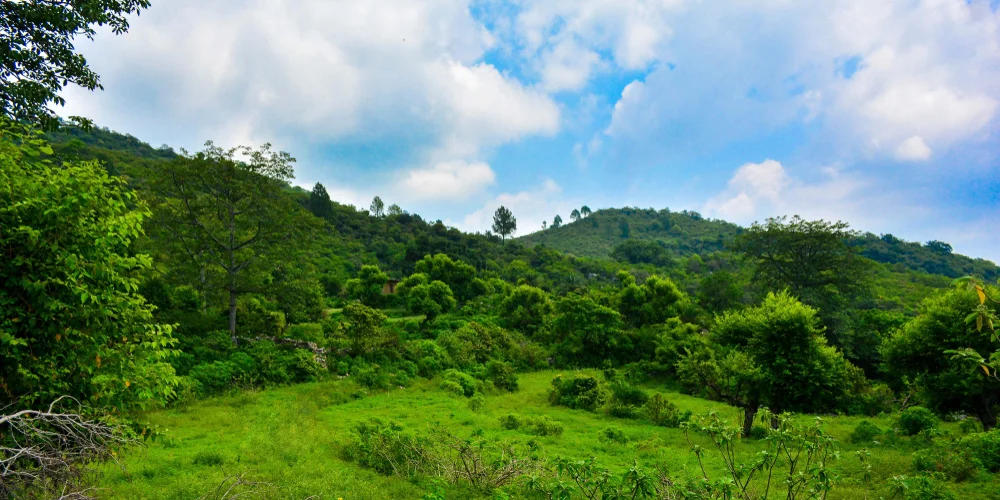

Introduction
Margalla Hills National Park is located in the foothills of the Himalayan range, right on the northern edge of Islamabad. Established in 1980, it covers approximately 17,386 hectares. It is one of the most accessible national parks in the world, offering a quick escape into nature for the residents of the capital city. The park includes the Margalla Hills, Shakarparian Park, and Rawal Lake.
Landscapes & Ecosystems
The park features rugged topography with steep slopes and numerous valleys. The vegetation is mainly sub-tropical dry semi-evergreen forest and pine forest at higher elevations. The hills are rich in limestone and sandstone. The park provides a vital green lung for Islamabad and supports a diverse ecosystem.
Biodiversity And Wildlife
Margalla Hills is home to a surprising variety of wildlife given its proximity to a major city. The Common Leopard is the top predator here. Other mammals include the Barking Deer, Wild Boar, Golden Jackal, and Rhesus Macaque. The park also boasts a rich bird life with species like the Kaleej Pheasant and Paradise Flycatcher.
Location On Map
Conservation Efforts
Conservation efforts focus on preserving the leopard population and managing human-wildlife conflict. The park also faces challenges from urban encroachment and forest fires, which are actively managed by the Islamabad Wildlife Management Board (IWMB). Several hiking trails (Trail 3, Trail 5, etc.) are maintained for eco-tourism.